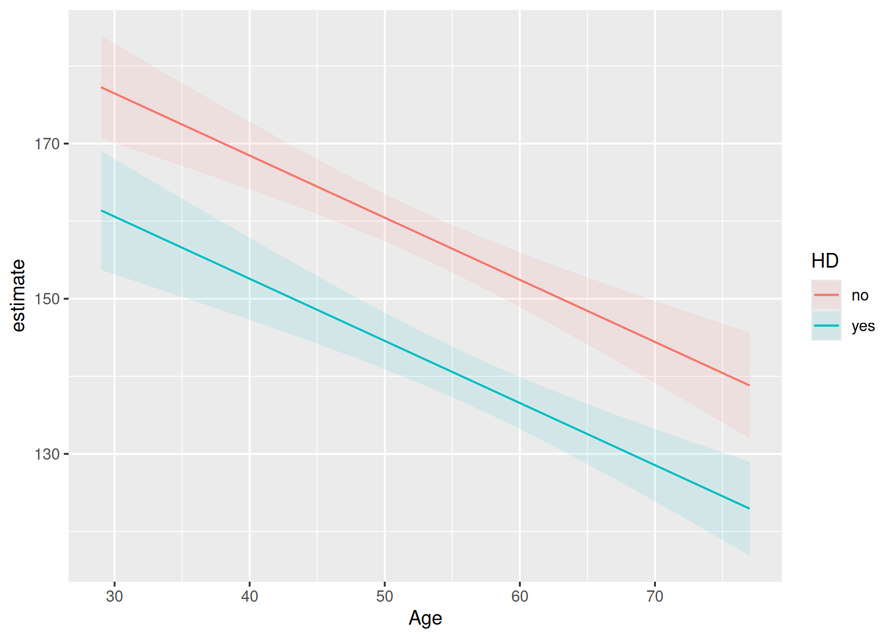

The slides contain speaking notes that you can view by pressing ‘S’ on the keyboard.
13.3 Case session 11: “”
At AalboR Statistical Hospital, a new exercise-based cardiac assessment protocol has recently been introduced following an initial data review suggesting that patients with lower max heart rate are more likely to have underlying heart disease. Based on this, some clinicians have started using the max heart rate during exercise as a quick indicator when evaluating chest pain patients.
However, during a recent internal meeting, a cardiologist raises a concern:
“I’m not convinced this applies to our patients. Especially those who develop chest pain during exercise — their heart rate response might behave differently. If that’s true, we could be misinterpreting results in a subgroup of patients. I want to see this association for myself”
You are asked to explore the hospital’s patient data to assess whether the relationship between Age and max heart rate — and the interpretation of max heart rate more generally — appears consistent across patients, or whether it differs depending on exercise-induced angina, sex, or other patient characteristics.
You are tasked with the decision: Should this new assessment approach be used broadly, or are there patient groups where it may be misleading?
Read [this Australian Geographics blog] (https://www.australiangeographic.com.au/blogs/creatura-with-bec-crew/2025/09/funnel-web-spiders-are-australias-deadliest-not-for-our-pets/) on the Funnel-web spider.
13.4 The additive and linear assumption
In a standard linear regression model, we make two important assumptions about how the predictors X relate to the response Y:
Additivity assumption
Each predictor affects Y independently of the other predictors. In other words, the effect of \(X_j\)
does not depend on the values of the other X’s.
Example: Suppose we predict salary using years of experience and education. The additivity assumption says that the effect of one additional year of experience is the same regardless of a person’s education level.
Linearity assumption
The effect of a predictor on Y is constant across its range. A one-unit increase in \(X_j\) is assumed to produce the same change in Y, no matter what the current value of \(X_j\) is.
Example: If each additional year of experience increases salary by €2,000, the model assumes this €2,000 increase is the same for someone with 2 years of experience and someone with 20 years.
We need to bend these assumptions in order to produce an interaction effect. You will see how we routinely do this using simple tricks of multiplication and squaring the predictor variables.
13.4.1 Adding the variable to a regression model is not enough
Term Contrast Estimate Std. Error z Pr(>|z|) S 2.5 % 97.5 %
Age dY/dX -0.801 0.128 -6.25 <0.001 31.2 -1.05 -0.55
HD yes - no -15.883 2.321 -6.84 <0.001 36.9 -20.43 -11.33
Type: response
Wait — the lines are completely parallel?!
This is exactly the additive and linear assumption: the same effect is constant for heart disease and for age. We need to allow some flexibility in our model to consider whether the slopes might change dependent on heart disease.
13.4.2 Making non-linear terms in linear models
multiplying two variables does not make the regression model “non-linear” in the statistical sense. Instead, it gives the model extra flexibility to capture relationships that are not additive.
Let’s start with the basic idea.
Suppose we want to predict salary using two variables:
(X_1) = years of experience
(X_2) = education level
We might first think:
More experience → higher salary. More education → higher salary.
But there is another possibility:
The value of experience might matter differently depending on education.
That is an interaction.
13.4.2.1 1. What does multiplication mean intuitively?
Think about ordinary multiplication first.
If you have:
\[
2 \times 3 = 6
\]
and increase 2 to 4:
\[
4 \times 3 = 12.
\]
The result depends on both numbers.
Now imagine:
\[
X_1 \times X_2.
\]
If (X_1) changes, the product changes — but how much it changes depends on (X_2).
For example:
Experience (X_1)
Education (X_2)
(X_1X_2)
2
1
2
3
1
3
2
3
6
3
3
9
Notice what happens when experience increases from 2 to 3:
If education = 1, the product increases by 1.
If education = 3, the product increases by 3.
So multiplication naturally creates a situation where:
The effect of one variable depends on the value of the other variable.
That is exactly what we mean by an interaction.
To allow this, we create a new variable:
\[
X_1X_2
\] which simply means multiply the two variables together.
Notice that multiplication is non-linear now!
When we say linear regression, “linear” does not mean that we are forbidden from multiplying variables.
Instead, it means that the model is linear in the coefficients — the numbers that the regression estimates.
We can think of (X_1X_2) as simply creating a new predictor.
Instead of thinking:
“I am multiplying two predictors inside the regression.”
Think:
“I have created a new variable called interaction, whose value is (X_1 X_2).”
The regression can then use this new variable just like any other predictor.
There are therefore two different ideas:
Additive models: Where the effect of one predictor does not depend on the other predictor.
Interaction models: Where he effect of one predictor can depend on the other predictor.
Multiplication is useful because it naturally creates this dependency.
13.4.3 Adding an interaction
model_interact_manual<-hd_data|>mutate( HD_num =ifelse(HD=="yes", 1, 0), age_by_hd =Age*HD_num)|>lm(MaxHR~Age+HD+age_by_hd, data =_)coef(model_interact_manual)
(Intercept) Age HDyes age_by_hd
213.9282010 -1.0563804 -53.8425770 0.6885871
However, this is such a common routine in R that we don’t need to make the new variable. Instead, we can indicate this multiplication by using the following notation:
Age:HD
We will wait with interpreting the coefficients till the next section. For now, confirm that these numbers are identical to the model below.
model_interact<-lm(MaxHR~Age+HD+Age:HD, data =hd_data)coef(model_interact)
(Intercept) Age HDyes Age:HDyes
213.9282010 -1.0563804 -53.8425770 0.6885871
Finally, let’s take a look at the interaction plot:
Cool! Now, the lines are definitely not parallel! This is in fact a trick for spotting interactions in plots.
CautionMany ways of doing the same thing
You will also see other people using this notation Age * HD. This expands to Age + HD + Age:HD. However, we recommend using the Age:HD, as adding more variables and * notation quickly explodes.
13.4.4.1 Step 1: Write separate equations for each group
No heart disease (hd = 0)
Substitute hd = 0:
$ {Y} = 213.93 − 1.06(age) $
Interpretation:
For people without heart disease, each additional year of age is associated with about 1.06 units lower predicted outcome. Heart disease (hd = 1)
Substitute hd = 1:
$ {Y} = 213.93 − 1.06(age) − 53.84 + 0.689(age) $
Combine terms:
\(\bar{Y} = 160.09 − 0.368(age)\)
Interpretation:
For people with heart disease, each additional year of age is associated with only about 0.37 units lower predicted outcome. The age effect is less negative because of the positive interaction term.
13.4.4.2 Step 2: Plug in specific ages
Age = 40
No heart disease: 213.93−1.06(40)=171.67
Heart disease: 160.09−0.368(40)=145.37
Difference: 145.37−171.67=−26.30
At age 40, heart disease is associated with about 26 units lower predicted outcome.
Age = 70
No heart disease: 213.93−1.06(70)=140.00
Heart disease: 160.09−0.368(70)=134.34
Difference: 134.34−140.00=−5.66
At age 70, heart disease is associated with only about 6 units lower predicted outcome.
13.4.4.3 Step 3: Interpret the interaction
The interaction coefficient is: 0.689
This means that the effect of heart disease becomes 0.689 units less negative for every additional year of age.
In other words: The difference between the heart disease and no-heart-disease groups shrinks by about 0.689 units for each additional year of age.
We can again plug the values in to examine this:
Age HD=0 HD=1Difference (HD−No HD)40171.67145.37-26.3050161.11141.69-19.4160150.54138.01-12.5370139.98134.32-5.66
Often, graphics are easier to interpret than than tables or coefficients. Let’s try to visualize the difference between max heart rate and having a heart disease when it change across age.
For now, let’s make the model more compressed at the expense of nesting some parameters within a new variable γ. We will not consider the noise, ε, so we will only deal with the expected value, μ.
Here, \(\gamma_i\) is the effect of age for a patient with a given heart-disease status. The interaction allows this effect to differ between patients with and without heart disease.
Substituting the second equation into the first gives
The quantity \(G_i\) plays the same role for the heart-disease effect that \(\gamma_i\) played for the age effect.
13.5.1 Key takeaway
The interaction coefficient \(\beta_3\) simultaneously describes
how the effect of age changes across HD/non-HD, and
how the effect of HD changes across levels of age.
In a linear model, interactions are symmetric. The choice of which variable is called the “predictor” and which is called the “moderator” is often a matter of interpretation rather than mathematics.
13.6 Continuous interactions
Until now, we’ve use one continuous and one dichotomous variable.
What if we have two continuous variables that interaction?
pain_data<-expand_grid( dose =0:10, pain =c(0,1,2))|>mutate( relief =1.6+0.4*dose+0.4*pain+0.9*dose*pain+rnorm(n(), 0,1))m<-lm(relief~dose*pain, data =pain_data)summary(m)
Call:
lm(formula = relief ~ dose * pain, data = pain_data)
Residuals:
Min 1Q Median 3Q Max
-1.85385 -0.49091 0.06944 0.65178 1.95569
Coefficients:
Estimate Std. Error t value Pr(>|t|)
(Intercept) 1.44615 0.48707 2.969 0.00594 **
dose 0.47187 0.08233 5.731 3.34e-06 ***
pain 0.44441 0.37728 1.178 0.24840
dose:pain 0.85675 0.06377 13.435 5.56e-14 ***
---
Signif. codes: 0 '***' 0.001 '**' 0.01 '*' 0.05 '.' 0.1 ' ' 1
Residual standard error: 0.9459 on 29 degrees of freedom
Multiple R-squared: 0.9794, Adjusted R-squared: 0.9773
F-statistic: 460.4 on 3 and 29 DF, p-value: < 2.2e-16
pain_data|>mutate(pain_group =factor(pain))|>ggplot(aes(dose, relief))+geom_point()+geom_smooth(method ="lm", se =FALSE)+facet_wrap(~pain_group, labeller =as_labeller(c( `0` ="No pain", `1` ="Mild pain", `2` ="Severe pain")))+labs( x ="Dose (mg)", y ="Subjective relief (0 - 25)")
Warning in data(efc, "sjPlot"): data set 'sjPlot' not found
m<-lm(neg_c_7~c12hour+e16sex+c12hour:e16sex, data =efc)# fit model with 3-way-interactionfit<-lm(neg_c_7~c12hour*barthtot*e16sex, data =efc)# select only levels 30, 50 and 70 from continuous variable Barthel-IndexsjPlot::plot_model(fit, type ="pred", terms =c("c12hour", "barthtot [30,50,70]", "e16sex"))

where:
neg_c_7 = caregiver burden (outcome) c12hour = hours of care provided sex = caregiver sex
Then ask the two interaction questions:
How much does the association between caregiving hours and burden depend on caregiver sex?
and
How much does the difference between male and female caregivers depend on caregiving hours?
Students usually perceive these as different questions, but the interaction coefficient is the same parameter in both cases.